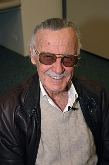

Spider-Man (z ang. „człowiek pająk”), pełne imię i nazwisko: Peter Benjamin Parker – fikcyjna postać (superbohater) znany z komiksów wydawanych przez Marvel Comics. Została stworzona przez scenarzystę Stana Lee, rysownika Steve’a Ditko, a także Jacka Kirby’ego[1]. Postać ta po raz pierwszy pojawiła się w Amazing Fantasy (vol. 1) #15 z sierpnia 1962[1][2]. Inspirowany był m.in. występującą w pulp magazine’ach postacią pogromcy zbrodni o pseudonimie Spider, bohatera z komiksów Archie Comics o pseudonimie Fly, postacią Silver Spidera z lat pięćdziesiątych, a także złoczyńcą znanym jako Spider-Man, która pojawiła się jednorazowo w komiksie Whiz Comics (vol. 1) #89 o przygodach Kapitana Marvela (wydawanych wówczas przez wydawnictwo Fawcett Comics)[3][4].
W komiksie Amazing Fantasy (vol. 1) #15 pierwszy raz ukazano genezę superbohatera. Peter Parker był sierotą, którym opiekowało się kochające stryjostwo May i Bena Parkerów. Nieśmiałość Petera i jego zainteresowanie nauką uczyniły z niego samotnika. Podczas pokazu naukowego, na którym przebywał Peter, przypadkowy pająk został poddany ogromnej dawce promieniowania[2]. Następnie ukąsił Petera w rękę i zginął. Po jakimś czasie chłopak odkrył, że w wyniku tego zdarzenia nabył pajęcze zdolności m.in. chodzenie po ścianach, nadludzką siłę i zręczność, zmysł przewidywania zagrożenia. Własnoręcznie uszył kostium zawierający motywy pająka, a także skonstruował urządzenie do wystrzeliwania sztucznej pajęczyny (web-shooters). Początkowo używał swoich nowo nabytych zdolności dla zarabiania pieniędzy, walcząc w zawodach wrestlingu, lub udzielając wywiadów dla telewizji w przebraniu pod pseudonimem „The Amazing Spider-Man” (ang. niesamowity człowiek pająk). Zmęczony po jednym ze spotkań z prasą, chciał wrócić do domu. Kiedy udawał się do windy, pozwolił uciec rabusiowi, tłumacząc ścigającemu go strażnikowi, że to nie jego sprawa[2]. Kilka dni później, gdy wrócił do domu, odkrył, że ten sam przestępca zamordował jego wujka Bena podczas próby napadu rabunkowego. Rozwścieczony zaczął ścigać mordercę swojego wujka, aż w końcu go dopadł[2]. Wtedy zrozumiał, że wielka moc niesie ze sobą wielką odpowiedzialność i przysiągł sobie od tej pory walczyć w obronie sprawiedliwości[1].
Na obu przegubach Spider-Man nosi urządzenia zwane sieciowodami. Służą one do wystrzeliwania sieci (sieciosplotu). Mogą tworzyć trzy rodzaje sieci: pojedynczą nić, grubsze mocne włókno oraz skomplikowaną sieć. Powstaje ona z szybko schnącej (ok. 1/10 s) cieczy, która jest przechowywana w pojemnikach pod ciśnieniem. Właściwości sieci: mocna, elastyczna oraz kleista, po upływie około jednej godziny wysycha i zmienia się w proszek. Strzał następuje poprzez naciśnięcie przycisku znajdującego się w śródręczu, środkowym i serdecznym palcem i jednoczesnym wygięciu dłoni. Zasięg strzału wynosi ok. 70 m. Spider-Man posiada także pas na zapasowe pojemniki z siecią oraz na aparat fotograficzny, którym robi zdjęcia do gazety Daily Bugle, a także „pajęcze pluskwy” – nadajniki wyczuwane przez jego pajęczy zmysł. Całe wyposażenie zaprojektował sam Peter Parker, wykorzystując do tego szkolne laboratorium. Po crossoverze „Avengers: Upadek Avengers” ciało Spider-Mana samo zaczęło produkować sieć, podobnie, jak ma to miejsce w filmach z jego udziałem (trylogia Sama Raimiego). Ta moc została jednak mu odebrana w wyniku wydarzeń z komiksowej historii „One More Day”. W The Amazing Spider-Man (vol. 1) #529 Spider-Man otrzymuje od Iron Mana specjalny uniform wykonany z żaroodpornych mikrowłókien z Kevlaru, posiadający specjalne wyposażenie pomagające Peterowi w walce. Tony Stark podczas budowy swojej zbroi uzyskał odpowiednie umiejętności oraz doświadczenie niezbędne do wykonywania tego typu strojów. W nowym kombinezonie Człowiek-pająk ma zainstalowaną specjalną pajęczą siatkę dzięki której może szybować na krótkie dystanse, wbudowany skaner radia straży pożarnej, policji i pogotowia oraz wzmocniony dźwięk, obraz, ultrafiolet, podczerwień oraz GPS. Oprócz drobnych gadżetów uniform posiada w okolicach ust filtry karbonowe chroniące przed toksynami i specjalne pajęcze odnóża do ataku na niewielkie odległości, a wszystko to obsługiwane jest przez skomputeryzowany system umieszczony w tytanowym napierśniku.
Na łamach komiksów opisujących przygody Spider-Mana przez lata pojawiła się ogromna liczba superzłoczyńców, którzy w większości, podobnie jak człowiek pająk, uzyskali swoje niezwykłe zdolności w wyniku wypadków przy różnego rodzaju eksperymentach naukowych. W galerii jego przeciwników pojawiali się także zwykli bandyci, szaleni naukowcy, szefowie świata przestępczego, a nawet stworzenia pochodzenia pozaziemskiego, a także, z uwagi na przenikanie się światów bohaterów komiksów firmy Marvel, negatywne postacie kojarzone z innymi superbohaterami uniwersum Marvela.SSSSSSSSSSSSSSF
Green Goblin I/Iron Patriot/Red Goblin (Norman Osborn) – żądny władzy biznesmen i dyrektor generalny Oscorp Industries[11]. Zyskał niezwykłą siłę podczas wybuchu w laboratorium na serum siły znanym jako Formuła Goblina, popadając jednocześnie w szaleństwo. Nosi halloweenowy kostium goblina i lata na małym odrzutowcu w kształcie nietoperza. Używa „dyniobomb”, bomb w kształcie jack-o’-lantern i strzela iskrami z rękawic[12]. W późniejszym czasie osiągnął sukces polityczny i założył grupę Thunderbolts składającym się ze zresocjalizowanych złoczyńców[11], a potem rządową Dark Avengers, w której przewodził jako Iron Patriot. Po ujawnieniu jego machlojek przez superbohaterów wrócił do alter ego Green Goblina[13]. Wkrótce też połączył Formułę Goblina i czerwony symbiont stając się Red Goblinem[14]. Doktor Octopus/Superior Spider-Man (Otto Octavius) – naukowiec, który w wyniku nieudanego eksperymentu został przyczepiony do maszyny z cybernetycznymi mackami. Po wielu latach, gdy dowiedział się, że zostało mu kilka miesięcy życia, przeniósł swój umysł do ciała Petera i zaczął karierę jako „lepszy” Spider-Man. Gdy Spider-Man odzyskał swe ciało, Doktor Octopus nauczył się jak być lepszym człowiekiem[15]. Venom I/Anti-Venom (Eddie Brock) – kiedy Spider-Man pozbył się pozaziemskiego organizmu – symbiontu (który wkomponował się w kostium superbohatera w czasie Tajnych Wojen), organizm znalazł nowego nosiciela, którym był dziennikarz Eddie Brock. Brock nienawidził Spider-Mana za utratę pracy i nadszarpnięcie jego reputacji. Dzięki symbiontowi, Brock (znany odtąd jako Venom), posiadł identyczne moce co Spider-Man, ochronę przed jego „pajęczym zmysłem”, oraz wiedzę o sekretnej tożsamości Parkera[16]. Brock później zyskał nowego symbionta powstałego z połączenia jego leukocytów i resztek poprzedniego i jako Anti-Venom stał się superbohaterem[17]. Po zdobyciu na powrót pierwszego symbiontu kontynuował bycie superbohaterem. Kingpin (Wilson Fisk) – publicznie biznesmen i filantrop, jednak przed opinią publiczną skrywa fakt bycia czołową figurą w przestępczym świecie Nowego Jorku. Choć wygląda na otyłego, w rzeczywistości jest umięśniony. Jednocześnie jest inteligentny i gotowy na wszystko, dzięki czemu unika sprawiedliwości. Początkowo był głównie wrogiem Spider-Mana, potem jego arcywrogiem stał się Daredevil[18]. Hobgoblin I (Roderick Kingsley) – bogaty projektant mody przebrany za goblina i latający na odrzutowcu w kształcie gargulca, nawiązując tym samym do Green Goblina. Tak jak on używa „dyniobomb”. Udoskonalił Formułę Goblina, likwidując skutki uboczne w postaci szaleństwa[19]. Na pewien czas zrezygnował z roli Hobgoblina i wrobił w to Neda Leedsa z Daily Bugle, robiąc mu pranie mózgu[20]. W późniejszym czasie założył biznes polegający na sprzedaży tajnych tożsamości złoczyńcom. Sandman (Flint Marko vel William Baker) – przestępca, który po ucieczce z więzienia znalazł się na plaży na terenie testów atomowych W wyniku promieniowania jego ciało składa się z żywego piachu i potrafi kontrolować jego kształt. Ostatecznie zszedł ze złej drogi i okazjonalnie zawiera sojusz ze Spider-Manem[21]. Electro (Maxwell „Max” Dillon) – pracownik elektrowni, który po porażeniu piorunem zyskał moc generowania prądu[22]. Vulture (Adrian Toomes) – podstarzały konstruktor, który opracował skrzydła i magnetyczną uprząż, dzięki którym potrafi latać. Drażni go, gdy ktoś próbuje korzystać z jego kostiumu i przejąć jego rolę[23]. Przez pewien moment posiadł umiejętność również młodość z ofiar, aby samemu odmłodnieć[24]. Mysterio (Quentin Beck) – były kaskader i spec od efektów specjalnych. Wykorzystuje swoje doświadczenie do tworzenia różnych złudzeń optycznych i technik manipulujących umysł. Jego znakiem charakterystycznym jest kulisty szklany hełm, chroniący przed dymem służącym do zmylenia wroga[25]. Kraven Myśliwy I (Sergei Kravinoff) – myśliwy będący synem rosyjskich imigrantów uciekających przed czystkami podczas rewolucji lutowej. Po spożyciu napoju ofiarowanego przez kapłankę voodoo w Afryce zyskał wielką zwinność i siłę, tym mogąc pokonać zwierzynę gołymi rękami. Ma silne poczucie honoru. Przyrodni brat Chameleona[26]. Lizard (Curt Connors) – biochemik i znajomy Petera. Po poddaniu się eksperymentom z DNA jaszczurek mającym na celu odrośnięcie amputowanej ręki, zmienia się w humanoidalnego jaszczura. Po interwencji Spider-Mana przemiana została cofnięta, jednak Connors nigdy nie wyleczył się z mutacji i przy każdej przemianie jego mózg ulega stopniowemu rozdwojeniu jaźni. Ostatecznie pozostał w jaszczurzym ciele zachowując jednak swój ludzki umysł[27]. Scorpion/Venom II (MacDonald „Mac” Gargan) – prywatny detektyw zmutowany przez eksperymentalny mutagen, zyskawszy moce skorpiona, a także cybernetyczny kostium bitewny ze specjalnym odwłokiem skorpiona. Eksperyment sfinansował J. Jonah Jameson, celem zabicia Spider-Mana, przez co potem stał się drugim wrogiem Scorpiona. Później też nosiciel symbiontu Venoma, a także członek Dark Avengers jako fałszywy Spider-Man[28]. Chameleon (Dmitrij Smierdiakow) – rosyjski agent potrafiący doskonale naśladować wygląd innej osoby dzięki zdolnościom charakteryzatorskim. W późniejszym czasie zdobył holograficzny pas i poddał się specjalnemu serum, dzięki czemu jego ciało stało się całkowicie plastyczne. Przyrodni brat Kravena Myśliwego[29]. Carnage (Cletus Kasady) – seryjny morderca, który połączył się z czerwonym symbiontem zrodzony z symbiontu Venoma. Kieruje się filozofią, iż wszechświat jest naturalnie chaotyczny, a prawo i sprawiedliwość to perwersja. Potrafi tworzyć z ciała różne bronie[30]. Jack O’Lantern/Hobgoblin II (Jason Philip Macendale) – były agent CIA i najemnik korzystający arsenału nawiązującego do jack-o’-lantern. Pragnął obsesyjnie zdobyć Formułę Goblina. Po zostaniu drugim Hobgoblinem porzucił tożsamość Jacka O’Lanterna[31]. W międzyczasie sprzedał za większą moc duszę N’astirhowi, który połączył go z demonem na krótki czas[32]. Wspomagany cybernetycznymi implantami współtworzył z Gauntem grupę przestępczą Cell-12[33]. Został zabity przez Rodericka Kingsleya, który zdecydował się powrócić do roli Hobgoblina[34]. Rhino (Aleksiej Sycewicz) – były egzekutor mafijny z ZSRR. Został połączony na stałe z twardym polimerowym egzoszkieletem przypominającym nosorożca dającym mu niezwykłą siłę i wytrzymałość. Niezbyt inteligentny sprzedaje swe usługi mądrzejszym łotrom[35]. Shocker (Herman Schultz) – kasiarz z rękawicami wytwarzającymi naenergetyzowane fale powietrzne. Często służy jako pomocnik innych przestępców[36]. Tombstone (Lonnie Thompson Lincoln) – Gangster albinos o twardej jak skała skórze i niesamowitej sile. Arcywróg Robbiego Robertsona, jednego z przyjaciół Petera[37]. Green Goblin II/American Son/Kindred (Harry Osborn) – syn Normana Osborna i przyjaciel Petera ze studiów. Nie mający najlepszych relacji z ojcem, jednak po jego śmierci i jej okoliczności przejął rolę Green Goblina[38]. Pragnący odwetu na Spider-Manie był jednocześnie rozdarty czy kontynuować dziedzictwo ojca[39]. Black Cat (Felicia Hardy) – zawodowa włamywaczka posiadająca umiejętność manipulowania polem prawdopodobieństwa w swoim otoczeniu, powodując pecha u innych. Po krótkim romansie ze Spider-Manem zdecydowała się na czynienie dobra[40]. Mister Negative (Martin Li) – pochodzący z Chin szmugler i gangster, który w Stanach Zjednoczonych kreuje się filantropa i założył wolontariat F.E.A.S.T (gdzie pracowała ciocia May). Pewnego dnia otruty eksperymentalnym narkotykiem D-Lite odkrył w sobie ciemną stronę, manifestując ją jako fotograficzny negatyw czarnej lub białej energii elektrycznej. Przez to umie „zakażać” ludzi, aby mu służyli i wytwarzać broń z tzw. negatywnej energii. Towarzyszy mu grupa Inner Demons składająca się ochroniarzy w maskach azjatyckich demonów i uzbrojonych w regeneracyjne moce i elektryczną broń. Pośredni stwórca Anti-Venoma[41]. Spencer Smythe – naukowiec robotyki. Obsesyjnie budował roboty zwane Spider-Slayer, by zniszczyć Spider-Mana, a także J. Jonaha Jamesona. Zmarł na skutek kontaktu z promieniotwórczymi substancjami podczas prac nad robotami[42]. Ultimate Spider Slayer (Alistaire Smythe) – syn Spencera Smythe’a, który po jego śmierci kontynuował tworzenie Spider Slayerów, pragnąc zemsty na Spider-Manie i za śmierć ojca. W pewnym czasie stał się cyborgiem, a następnie stworzył bioenergetyczną zbroję[43]. Jackal (Miles Warren) – profesor biologii i wykładowca Petera ze studiów. Był zakochany w ówczesnej miłość Petera – Gwen Stacy. Gdy zginęła, Warren oskarżył o to Spider-Mana i opanował sztukę klonowania ludzi. Jest odpowiedzialny za stworzenie różnych klonów Spider-Mana, w tym Scarlet Spidera i Kaine’a, a w późniejszym czasie za wybuch epidemii pajęczego wirusa w Nowym Jorku[44]. Morlun – istota wędrująca przez stuleci, karmiąc się energią słabszych istot i poszukując totemów z czystą energią, awatarów o prymitywnych zwierzęcych duszach. Uważa Spider-Mana za posiadającego totem pająka, dlatego go prześladuje w nadziei na pochłonięcie jego esencji[45]. Puma (Thomas Fireheart) – czempion z indiańskiego plemienia. Prezes Fireheart Enterprises i najemnik posiadający nadprzyrodzone zdolności zmieniania się w hybrydę pumy i człowieka. Z początku polował na Spider-Mana, jednak docenił go i niekiedy stawał się jego sojusznikiem[46]. Hammerhead – gangster, któremu chirurg Jonas Harrow zamienił jego uszkodzoną czaszkę na nową spłaszczoną i wykonaną ze stali. Otrzymał dodatkowe wzmocnienia kostne z adamantium od Mister Negative’a, w zamian za całkowitą lojalność[47]. Silvermane (Silvio Manfredi) – boss mafijny włoskiego pochodzenia w syndykacie Maggia i jeden z czołowych szefów świata przestępczego Nowego Jorku[48]. Pozbawiony skrupułów starzec, który pragnął się odmłodzić i w tym celu zdobył odmładzającą Tablicę Czasu[49]. Później wrócił do dawnego wieku i po rzekomej śmierci staje się supersilnym cyborgiem o srebrnym kolorze[48].
